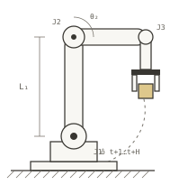
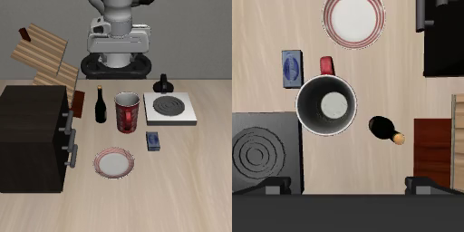
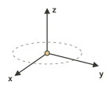
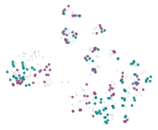
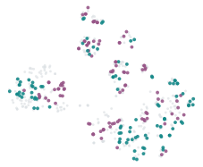
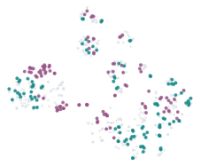

WorldDojoA Comprehensive Benchmark for Interactive Embodied World Models in Robotic Manipulation


Actions aₜ
Δ position · Δ rotation · grip

World model
ôt+1 ∼ pθ(· | ot, at)
Rollout BWM · t = / 164
§1
Abstract
Interactive embodied world models promise scalable support for policy learning, planning, and evaluation by predicting future environment states. However, systematic evaluation of their object-state and event prediction across diverse scenarios and interactions remains limited. We introduce WorldDojo, a comprehensive benchmark centered on object states and interaction events. WorldDojo evaluates four core capabilities: Spatial Consistency, Horizon Memory, Object Generalization, and Causal Response. Each capability spans three progressive difficulty levels (L0–L2), revealing how model performance changes as challenges increase. To assess these capabilities, we measure object-state consistency, spatial localization accuracy, object reappearance, and event consistency. Extensive evaluation of leading interactive embodied world models reveals key limitations: difficulties in tracking object positions and preserving object identities under dynamic conditions, failures in predicting multi-step event propagation, and a tendency to substitute familiar counterparts for unseen objects. In conclusion, WorldDojo provides a systematic foundation for measuring and improving world models' predictive capabilities under progressively harder challenges.
§2
Four capabilities. Increasing difficulty.
Given the same initial observations and future robot actions, compare predicted and reference videos at the level of object states and interaction events.
01 / OSCR · NPE
Spatial Consistency
Maintain spatial layouts as viewpoints and objects move.
L0
Fixed layouts under changing viewpoints
L1
A single moving object
L2
Sequential movement of multiple objects
02 / OSCR · ORR
Horizon Memory
Retain and update object states while targets are temporarily out of view.
L0
Simple hiding and reappearance
L1
Multiple objects or repeated occlusions and revisits
L2
Long-horizon state tracking across multi-step interactions
03 / OSCR · ECR
Object Generalization
Predict object states and interactions under changes to targets and background distractors.
L0
A single varied interaction target or background distractor
L1
Multiple objects varied simultaneously
L2
Objects absent from the training set
04 / OSCR · ECR
Causal Response
Predict event triggering and propagation under paired factual and counterfactual conditions.
L0
Direct trigger–response relations
L1
Multi-step event chains with interventions
L2
Multi-factor AND / OR triggering conditions
01
Construct controlled interactions
Reuse demonstrations and adapt manipulation stages to object geometry, spatial layouts, and visibility requirements. Validate physical feasibility, state changes, and event outcomes.
02
Predict future observations
Condition each model on initial observations and a sequence of robot actions, then generate future observations for the corresponding views.
03
Evaluate states and events
Compare task-designated object states and event outcomes against reference annotations, with dedicated localization and reappearance metrics.
§3
Explore the benchmark
Recorded LIBERO simulation trajectories from the fixed and wrist cameras.
§4
Ground truth vs. prediction
Drag the divider to compare the recorded frame (GT) on the left with BWM’s prediction on the right. In LIBERO, switch the fine-tuning data to see how each setting affects the prediction of the same object at the same moment.
Ground truth
Prediction
↔
Loading comparison…
§5
Measure states and events
Four complementary metrics evaluate corresponding predicted and reference observations. Each suite pairs OSCR with a capability-specific measure.
OSCRHigher ↑
Object State Consistency Rate
How often the target objects in a predicted view match their reference appearance, form, and pose.
Definition & protocol
For each sampled timestep with at least one valid target, GPT-6-Astra judges the valid targets as a set against the reference. The protocol samples six frames per trajectory. It averages the binary judgments over eligible timesteps for each view, equally over valid views within a sample, and finally over samples.
OSCRᵥ = (1 / |Tᵥ|) Σₜ∈Tᵥ J_state(t, v)
NPELower ↓
Normalized Position Error
Bounding-box center distance normalized by the image diagonal. Missing or invalid predicted boxes receive the maximum error.
Definition & protocol
Average over reference-defined evaluation instances. NPE ranges from 0 to 1. The leaderboard displays NPE × 100 and ranks with unrounded values.
The fraction of correctly hidden targets that reappear in every sampled reappearance frame.
Definition & protocol
Reference videos define the hiding and reappearance phases. h_e requires absence from every sampled hiding frame; r_e requires visibility in every sampled reappearance frame. ORR is conditional on correct hiding, not all episodes.
ORR = Σ(h_e r_e) / Σh_e
ECRHigher ↑
Event Consistency Rate
Agreement between predicted event occurrence and task expectations, counting missed events and events that should not occur.
Definition & protocol
GPT-6-Astra identifies events by predicate, participants, and temporal window. Factual and counterfactual trajectories have their own expected labels.
On predicted videos, GPT-6-Astra agrees with human consensus in 90.6% of object-state judgments and 88.0% of event judgments. Individual annotators agree with the consensus in 89.7% and 85.3% of judgments, respectively.
Judge reliability (%)
Judge
Reference videos Accuracy
Predicted videos Agreement with humans
State
Event
State
Event
Qwen3-VL-8B
99.3
75.3
84.6
60.3
Qwen3-VL-32B
99.9
77.7
85.9
73.8
Gemini-3.1-Pro
99.9
88.7
71.7
80.7
GPT-6-Astra
99.9
99.3
90.6
88.0
Human
99.9
99.9
89.7
85.3
§6
Leaderboard
Five models evaluated in LIBERO simulation across two fine-tuning settings and three difficulty levels. Each setting is evaluated on 200 test trajectories per suite and level. Both training conditions use fine-tuned models.
Sort by suite
Swipe to compare all 4 suites × 3 levels →
L0, L1 and L2 occupy successive rows for each model and fine-tuning setting.
Select a level and click a metric to rank entries. Gold highlights the best score for each level and metric. NPE is ranked before rounding.
§7
Capability map
Every model on one chart. Each profile spans eight capability measures: the farther it reaches from the center, the stronger the performance on that axis.
Difficulty level
Fine-tuning data
Farther from the center = stronger · fixed 0–100 scale
SC: Spatial Consistency · HM: Horizon Memory · OG: Object Generalization · CR: Causal Response. Rates are percentages. The chart and model details show 1 − NPE as a percentage. Higher values indicate smaller position errors. Each axis keeps its own meaning; polygon area is not a benchmark score.
§8
What the benchmark reveals
51.3% → 7.6%
Complex triggers are harder to predict
ECR for direct responses versus multi-factor events, averaged over five models trained on LIBERO demonstrations.
16.79 vs. 8.48
Wrist views nearly double localization error
Wrist versus fixed camera during sequential motion. Mean NPE ×100 for BWM and Cosmos3-Nano after WorldDojo L0 fine-tuning.
66.0% vs. 28.7%
BWM preserves background objects more often
Background versus interaction-target OSCR on unseen objects after WorldDojo L0 fine-tuning.
+26.5 → +6.0 points
Training gains shrink with difficulty
Across five models, switching from LIBERO demonstrations to WorldDojo L0 yields a larger ECR gain at L0 than at L2.
Causal response
Compare training conditions on paired interventions, event chains and logical triggers.
Localization & generalization
Models fine-tuned on WorldDojo L0. Compare localization error by camera, object-state consistency by role, and counts of substitutions and deformations at each difficulty level.
How many frames does OSCR need?
Overall OSCR is 37.01% with five frames, 36.82% with six and 35.07% with ten. The six-frame protocol uses 40% fewer frames than the ten-frame protocol.
OSCR (%)
Number of sampled frames
Spatial Consistency
The cup shifts as the camera moves
The moving camera reveals a misshapen handle. In the final view, the cup appears in a different position than in the recording.
Ground-truth targetPrediction error
LIBERO simulation
Initial view
Camera moves
Later view
Ground truth
Cup in place
Handle visible
Recorded position
Prediction
Cup in place
Handle deformed
Cup misaligned
Real world
Initial view
Camera moves
Later view
Ground truth
Blue object visible
Recorded position
Recorded position
Prediction
Blue object visible
Position mismatch
Position mismatch
Object Generalization
The bottle becomes a bowl
During manipulation, the predicted bottle takes on the shape of a bowl. The substitution persists in the following frame.
Ground-truth targetPrediction error
LIBERO simulation
Initial grasp
Manipulation
Later view
Ground truth
Bottle visible
Bottle retained
Bottle retained
Prediction
Bottle visible
Bowl replaces bottle
Bowl shape persists
Real world
Initial grasp
Manipulation
Later view
Ground truth
Pink block visible
Block retained
Block retained
Prediction
Pink block visible
Blue ball replaces block
Blue ball persists
Horizon Memory
The blue ball fails to reappear
The robot arm briefly hides the blue ball. When the arm moves away, the recording shows the ball again. It is still missing in the prediction.
Ground-truth targetPrediction error
LIBERO simulation
Before occlusion
During occlusion
After occlusion
Ground truth
Cup visible
Cup occluded
Cup reappears
Prediction
Cup visible
Cup occluded
Cup missing
Real world
Before occlusion
During occlusion
After occlusion
Ground truth
Ball visible
Ball occluded
Ball reappears
Prediction
Ball visible
Ball occluded
Ball missing
Causal Response
The model predicts a lift that never happened
Some trajectories include a feigned grasp. The gripper makes a grasping motion while the object stays on the table. Here the model predicts a lift for both the simulated can and the real blue block.
Ground-truth targetPrediction error
LIBERO simulation
Before grasp
Grasp attempt
Outcome
Ground truth
Can on table
Gripper at can
No lift · Can stays on table
Prediction
Can on table
Gripper at can
False lift · Can rises
Real world
Before grasp
Grasp attempt
Outcome
Ground truth
Block on table
Gripper at block
No lift · Block stays on table
Prediction
Block on table
Gripper at block
False lift · Block rises
§9
Dataset & real-world extension
Simulation trajectories
6,000
Training · L0
3,200
Validation · L0
400
Test · L0–L2
2,400
Each LIBERO suite contributes 800 training and 100 validation trajectories at L0, plus 200 test trajectories at each of L0, L1, and L2. Simulator states and rendering data provide object identities, visibility, bounding boxes, and the participants and timing of interaction events.
LIBERO test-set composition
The rings show the suite, difficulty level, and test mode, from the center outward.
Hover over or focus a segment to see its trajectory count.
Trajectory distribution
Each dot represents one trajectory. The plot compares 6,000 WorldDojo simulation trajectories (1,500 per suite across all splits) with 2,000 official LIBERO successful demonstrations. Hover inside a contour, over a dot, or over a legend entry to highlight its group. Click to pin it.
Object Generalization
Spatial Consistency
Horizon Memory
Causal Response
Official LIBERO
A frozen V-JEPA 2 encoder extracts features from 64 frames per camera view. One t-SNE projection combines the fixed and wrist views of all 8,000 trajectories. The contours show density normalized within each group.
Object Generalization by difficulty · 600 test trajectories
The three panels share a separate t-SNE projection of the 600 Object Generalization test trajectories. Each highlights one difficulty level, with 100 distractor cases and 100 extrapolation cases.
Distractor
Extrapolation
Other levels
L0

L1

L2

Real-world test-set composition
Each suite contributes 400 test trajectories, with 160 at L0, 160 at L1, and 80 at L2. The outer ring shows these counts.
Hover over or focus a segment to see its trajectory count.
Real-world validation
The real-world dataset contains 1,600 training and 1,600 test trajectories across two robot platforms, including the dual-arm ARX-X5. It covers all four suites at L0–L2. Human annotators use the same object-state and event definitions as in simulation. Each predicted view is compared with its matching recording from the head camera or one of the two wrist cameras.
BWM performance on the dual-arm ARX-X5
Suite
Metric
L0
L1
L2
Spatial Consistency
OSCR ↑
85.1
72.8
64.9
NPE ×100 ↓
2.9
8.4
13.7
Horizon Memory
OSCR ↑
71.2
66.4
44.1
ORR ↑
61
39
–
Object Generalization
OSCR ↑
65.1
64.2
22.5
ECR ↑
56.3
53.1
28.8
Causal Response
OSCR ↑
67.6
66.7
59.6
ECR ↑
70.2
19.3
10.0
OSCR, ORR, and ECR are percentages. Arrows indicate the preferred direction. A dash marks an unreported value.
On the ARX-X5, BWM’s spatial error (NPE × 100) rises from 2.9 at L0 to 13.7 at L2. Causal Response ECR falls from 70.2% for direct responses to 19.3% for event chains and 10.0% for multi-factor events. In Horizon Memory L2, only one of the 53 episodes analyzed meets the hiding criterion, and its target fails to reappear.
§10
Compare benchmark coverage
✓ Yes ✗ No · Each capability shows two marks in order: task / evaluation.
Benchmark
Dataset
Protocol
Capability (task / eval.)
Metrics
Domain
Test size
Train.
Levels
CF
SC
HM
OG
CR
State
Event
Sim
Real
WorldSimBench
—
Yes✓
No✗
No✗
Task no, evaluation yes✗✓
Task no, evaluation no✗✗
Task no, evaluation no✗✗
Task no, evaluation yes✗✓
Yes✓
Yes✓
Yes✓
No✗
RoboWM-Bench
—
Yes✓
No✗
No✗
Task no, evaluation yes✗✓
Task no, evaluation no✗✗
Task no, evaluation no✗✗
Task no, evaluation no✗✗
Yes✓
Yes✓
Yes✓
Yes✓
KineBench
—
Yes✓
Yes✓
No✗
Task no, evaluation no✗✗
Task no, evaluation no✗✗
Task yes, evaluation yes✓✓
Task no, evaluation no✗✗
No✗
No✗
Yes✓
No✗
WorldArena
500 episodes
No✗
No✗
No✗
Task no, evaluation yes✗✓
Task no, evaluation no✗✗
Task no, evaluation no✗✗
Task no, evaluation yes✗✓
Yes✓
Yes✓
Yes✓
No✗
MiraBench
906 videos
No✗
Yes✓
Yes✓
Task no, evaluation yes✗✓
Task no, evaluation yes✗✓
Task no, evaluation no✗✗
Task yes, evaluation yes✓✓
Yes✓
Yes✓
Yes✓
Yes✓
WorldSimProbe
18,608 instances
No✗
Yes✓
Yes✓
Task yes, evaluation yes✓✓
Task no, evaluation no✗✗
Task no, evaluation no✗✗
Task yes, evaluation yes✓✓
Yes✓
Yes✓
Yes✓
No✗
WMBench
7,200 seconds
Yes✓
No✗
No✗
Task no, evaluation yes✗✓
Task no, evaluation no✗✗
Task no, evaluation no✗✗
Task no, evaluation yes✗✓
Yes✓
Yes✓
No✗
Yes✓
ACWM-Phys
1,500 episodes
Yes✓
Yes✓
No✗
Task no, evaluation no✗✗
Task no, evaluation no✗✗
Task yes, evaluation yes✓✓
Task no, evaluation no✗✗
No✗
No✗
Yes✓
No✗
TriWorldBench
500 episodes
No✗
No✗
No✗
Task yes, evaluation yes✓✓
Task no, evaluation no✗✗
Task no, evaluation no✗✗
Task no, evaluation yes✗✓
Yes✓
Yes✓
Yes✓
No✗
WorldDojo
2,400 episodes
Yes✓
Yes✓
Yes✓
Task yes, evaluation yes✓✓
Task yes, evaluation yes✓✓
Task yes, evaluation yes✓✓
Task yes, evaluation yes✓✓
Yes✓
Yes✓
Yes✓
Yes✓
Train. = custom training data · CF = counterfactual pairs · — = test size not reported. WorldDojo’s 2,400 episodes are its simulation test set.